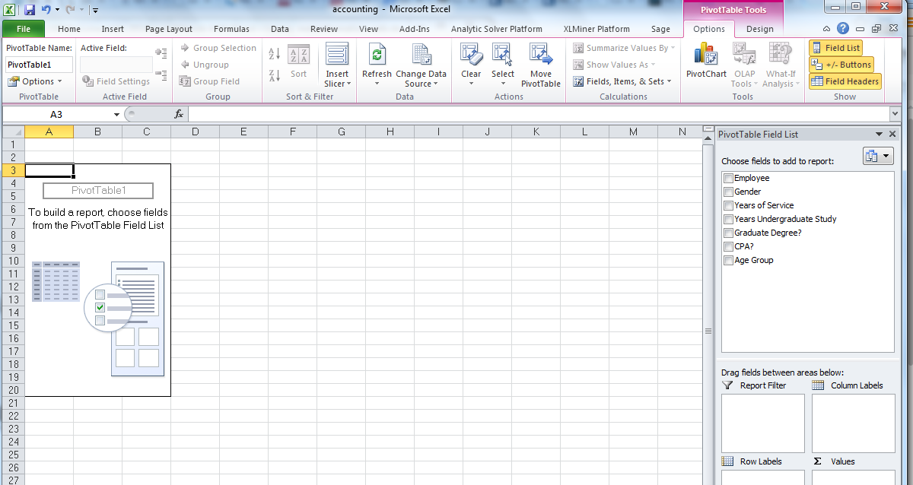
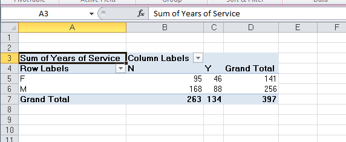
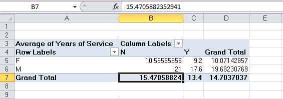
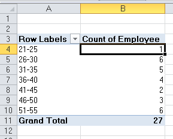
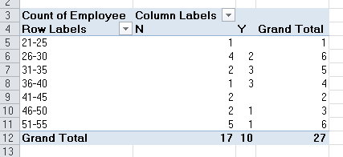

Excel provides a powerful tool for distilling a complex data set into meaningful information: PivotTables.
PivotTables allow you to create custom summaries and charts of key information in the data. To apply pivottables you need a data set with column labels in the first row.
The data set Accounting Professionals provides the results of a survey of 27 employees in a tax division of a Fortune 100 company.
Select any cell in the data set and choose Insert PivotTable from the Insert tab and follow the steps of the wizard.
Excel creates a new worksheet with a pivotTable as shown below:

You should first decide what types of tables you wish to create. For example in the accounting data set, suppose you want to count the average number of years of service for males and females with and without a graduate degree. If you drag the variable Gender from the field list to the row labels area, the variable graduate degree? into the column labels area and the variable years of service into the values area, then you have created the PivotTable.

However, the sum of years is probably not what you would want.
In the options tab under Pivot Table Tools in the menu bar, click on the Active Field group and choose Value Field Settings. You will be able to change the summarisation method in the PivotTable in the dialog. Selecting the Average results in the PivotTable shown below. We see that the average number of years of service is not much different for holders of graduate degrees, but that females have much fewer years of service than males.

The beauty of pivotTables is that if you wish to change the analysis, you can simply uncheck the boxes in the field list or drag the variable names to different field areas. You may easily add multiple variables in the fields to create different views of the data.
Create PivotTables to find the average number of years of undergraduate study for each age group with and whithout a CPA and the number of employees in each age group with and without a CPA in the Excel file Accounting Professionals.
Create a PivotTable showing the count of the number of employees by age group.

PivotTables also provide an easy method of constructing cross-tabulations for categorical data. Extend the one above, drag the field Graduate Degree? into the column label box in the field list. This PivotTable is a cross-tabulation of the number of employees in each age group who do or do not posses a graduate degree.

Open the file Bicycle Pivot. Create a PivotTable to determine the total revenue for material groups in each sales organisaiton.
Experiment with adding filters to the pivotTable, such as Distribution Channel. You can also drill down into the data by right clicking on the category Mountain bike, choose Expand/Collapse and then Expand, then choose the detail you want to see, in this case Material. Remove the drill down by unticking the Material field in the field list.
Try restricting to the first quarter of 2007. Add the field Date, and then right click on one of the dates displayed, choose Group, and add Months, and Years to the groups. At the top of the PivotTable then click on the dropdown box for Years and tick 2007, click on the dropdown box for Months and choose the first quarter (Jan, Feb, Mar). You can then drag the years and month up to the filter area.